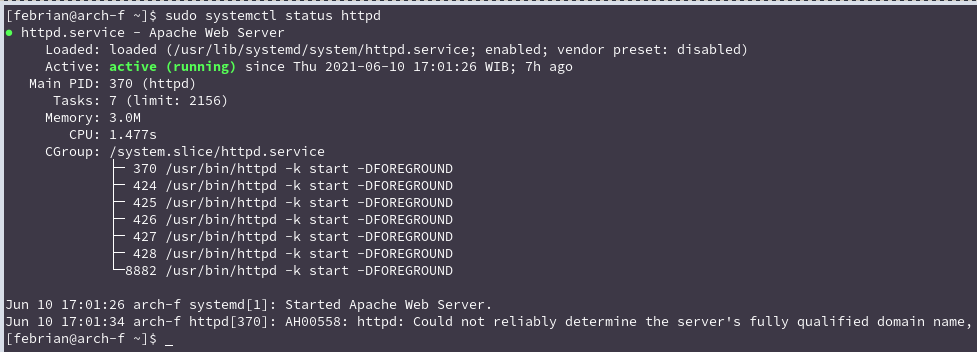
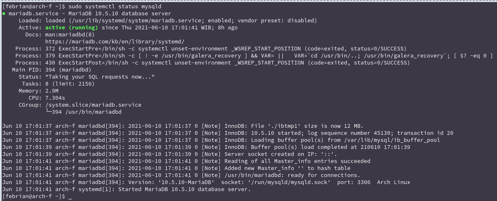
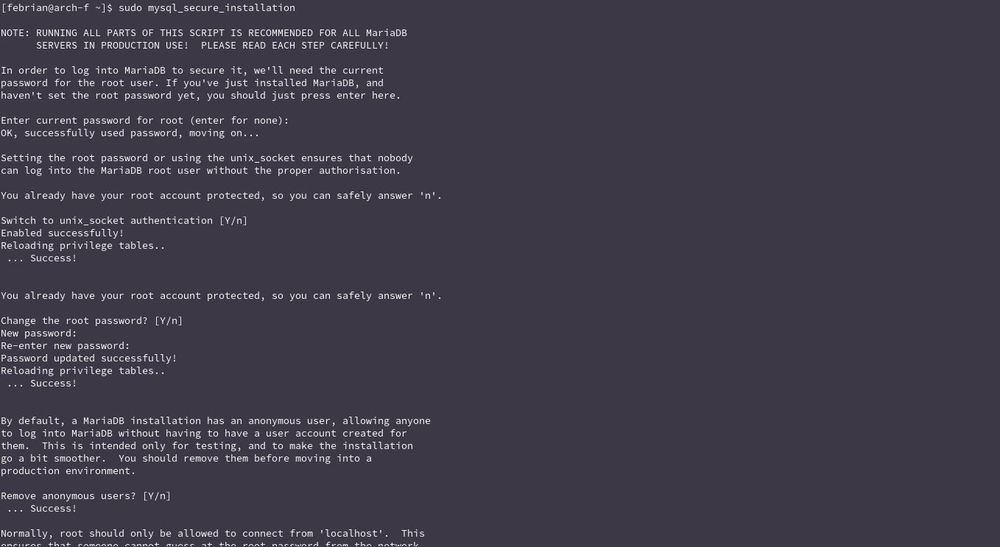
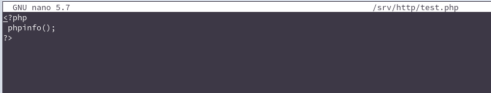
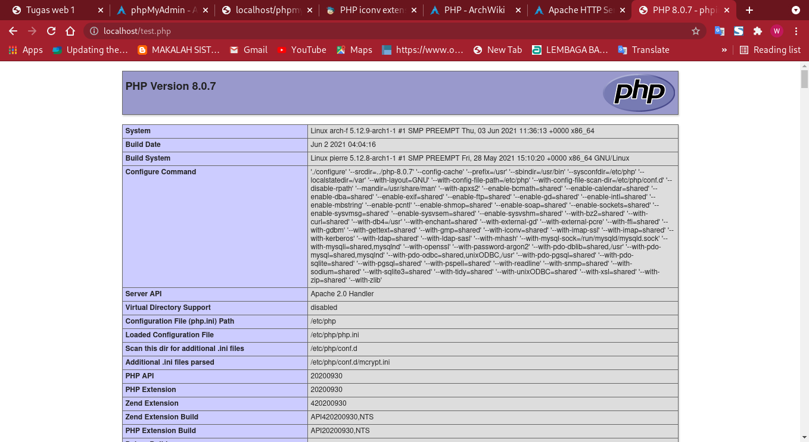
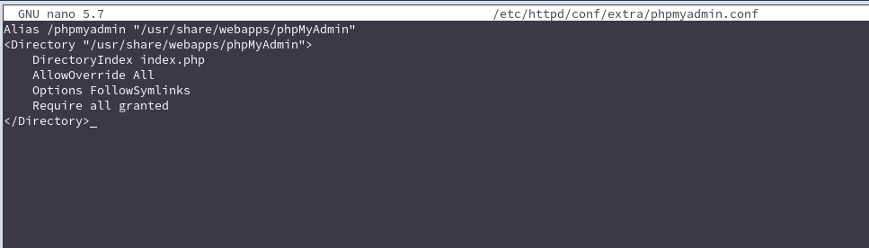
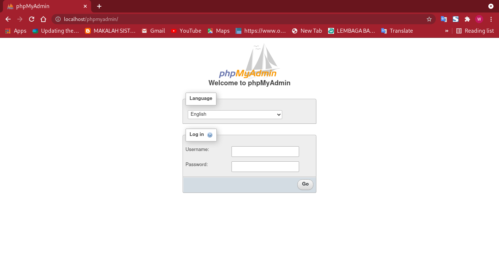

Instal Apache, MySQL, PHP dan phpMyAdmin di Archlinux
Home > Tutorial > Instal Apache, MySQL, PHP dan phpMyAdmin di Archlinux
Arsip
بِسْمِ اللَّهِ الرَّحْمَنِ الرَّحِيم
Apache adalah web server yang sangat populer, yang dikembangkan oleh Apache Software Foundation. Kali ini saya akan membagikan pengalaman saya cara menyiapkan Apache dan cara mengintegrasikannya secara opsional dengan PHP.
Instalasi
1. sudo pacman -S php apache mariadb php-apache phpmyadmin
2. yay -S php-mcrypt
Konfigurasi
sudo nano /etc/httpd/conf/httpd.conf
beri tanda pagar pada baris :
LoadModule mpm_event_module modules/mod_mpm_event.so
lalu hilangkan tanda pagar pada baris :
LoadModule mpm_prefork_module modules/mod_mpm_prefork.so
kemudian tambahkan seperti di bawah ini dan simpan :
LoadModule php_module modules/libphp.so
AddHandler php-script .php
Include conf/extra/php_module.conf
Jalankan httpd-nya lalu cek statusnya :
1. sudo systemctl enable httpd
2. sudo systemctl restart httpd
3. sudo systemctl status httpd

Konfigurasi MySQL :
sudo mysql_install_db --user=mysql --basedir=/usr --datadir=/var/lib/mysql
lalu Jalankan :
1. sudo systemctl enable mysqld
2. sudo systemctl start mysqld
3. sudo systemctl status mysqld

jika sudah jalan, selanjutnya buat password root pada MySQL (jika ada pertanyaan tinggal enter-enter saja. contoh pada gambar dibawah) :
mysql_secure_installation

Kita tes php-nya, sebelumnya bikin file tes.php pada /srv/http/ :
sudo nano /srv/http/test.php

Jalankan pada browser http://localhost/test.php :

selanjutnya Konfigurasi phpMyAdmin :
sudo nano /etc/php/php.ini
kemudian aktifkan ektensi berikut dengan menghilangkan titik koma " ; " di depannya atau jika tidak ada di list tambahkan extensi :
extension=pdo_mysql
extension=mysqli
extension=bz2
extension=zip
extension=iconv.so
Konfigurasi file phpMyAdmin :
sudo nano /etc/httpd/conf/extra/phpmyadmin.conf

tambahkan pada /etc/httpd/conf/httpd.conf lalu restart httpd :
Include conf/extra/phpmyadmin.conf
Jalankan pada browser http://localhost/phpmyadmin/ :

Semoga Bermanfaat.
Referensi
- https://wiki.archlinux.org/title/Apache_HTTP_Server
- https://wiki.archlinux.org/title/PHP
- https://wiki.archlinux.org/title/phpMyAdmin